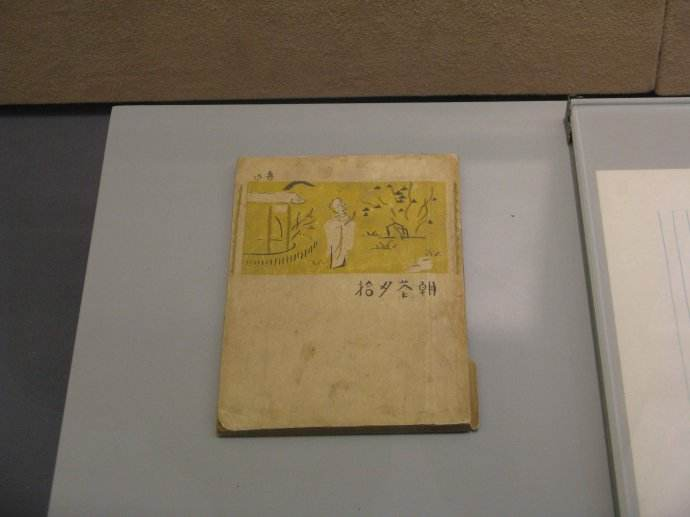

2017年北京市中考语文试题 · 基础选择题 第1、2题
1. 欧阳询的字点画工妙，骨硬肉丰。古人评价其字的笔画“（斜钩）”具有“险而劲”的特点。请你欣赏下面欧阳询的《九成宫醴泉铭》选帖，完成（1）—（2）题。（共5分）
（2）下面是古人评价书法的四句话。根据这幅字帖的特点，判断其中属于评价欧阳询《九成宫醴泉铭》书法作品的一项是（3分）
A. 如云鹄 游天，群鸿戏海，行间茂密，实亦难过。
游天，群鸿戏海，行间茂密，实亦难过。
B. 翰林苏子瞻书法娟秀，虽用墨太丰而韵有余，于今为天下第一。
C. 如深山至人，硬瘦清寒，而神 气充腴，能令王者屈膝，非他刻可方驾也。
D. 字之体势，一笔而成，偶有不连，而血脉不断，及其连者，气脉通于隔行。
2. 名人故居是北京的历史文化名片。参观这些故居，是了解历史、感悟文化、汲取精神营养的重要途径，请你根据要求，完成（1）—（4）题。（共10分）
（2）在鲁迅博物馆，四位同学观看了《朝花夕拾》的展品，联想这部散文集，颇有感触。下面是他们分别在参观记录本上写下的感受，其中比喻句运用不恰当的一项是（3分）

A. 百草园见证了鲁迅美好的童年岁月，拔何首乌、摘覆盆子、捕鸟……那多彩的生活场景，好像色彩斑斓的图画，然我沉醉其中。B. 长妈妈给童年的鲁迅讲故事，还为他买《山海经》……这些小事如同涓涓细流，流淌在鲁迅的记忆里，也让我看到了一个普通人的淳朴与善良。
C. 藤野先生的无私帮助和真诚关怀，对于遭遇困境的鲁迅来说，犹如冬日的暖阳，这样的老师让我肃然起敬。
D. 《朝花夕拾》在平静的叙述中富有深长的韵味，如同一首热烈而激昂的乐曲，令我回味无穷。